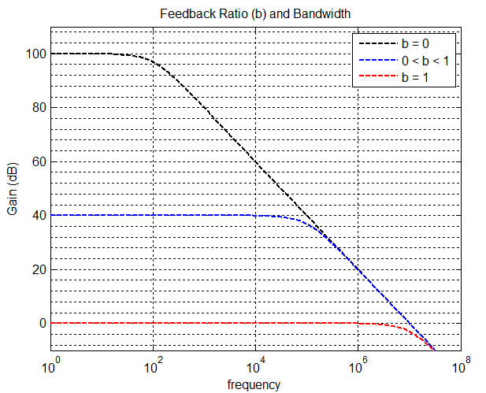

Analog Capacitive Touch Sensor
Touch sensors are ubiquitous these days, and can be designed really easily using an MCU, but I wanted to do it analog. This design is based around an op amp relaxation oscillator, a simple peak detector and a comparator. I am only going to describe the first stage here because the output conditioning is self explanatory.
The Op Amp Pole
Sometimes, the best things about op amps are their non-idealities. A professor of mine wrote a paper which describes some "partially active R filters" -- filters that utilize IC amplifier poles as capacitors, so to speak. This gave me the idea to go ahead and exploit the finite bandwidth of a common IC op amp to make an oscillator with a frequency dependent amplitude.
An op amp relaxation oscilator is a fine candidate because the amplifier is operating open loop \((b=0)\, so the corner frequency will be relatively low.
The frequency dependence of a relaxation oscillator's amplitude was easy to verify with a multimeter, but since I couldn't see the shape of the waveform, I couldn't tell for sure if the effect was due to a simple amplitude rolloff, or nonlinear slewing (I didn't have a scope at the time). Either will do the job, and different op amps will have different characteristics. According to the NE5532 datasheet, typical unity-gain bandwidth is \(10MHz\), and typical slew rate is \(9V/\mu s\), so slewing is expected. The important design consideration is finding the frequency and duty cycle which maximizes the amplitude sensitivity to operational ranges of measured capacitance.
SPICE Simulation
The SPICE circuit below shows the basic setup. There are a few things to talk about first: (1) \(D2\), \(D3\), \(R9\) and the current sources simulate the input clamping, input resistance and input bias currents respectively of a typical NE5532. (2) The op amp model used is LTSpice's UniversalOpAmp2, which allows control over bandwidth, slew rate, output resistance, etc. (3) \(R7\) and \(R8\) are there to limit the current through the clamping diodes in the case of a weird situation at the output, or a shorting of the input cap or something. Aside from that, this is just a classic relaxation oscillator circuit operating in such a way to exploit speed limitations to control the amplitude. Also, R4 was made adjustable -- I happened to have a lot of \(10k\) trimpots on hand, thus \(R3\) and \(R2\) had to be relatively small in value.

The capacitor labeled \(Cinput\) is the capacitance to ground of the person touching the input node, and it's value is stepped from \(10pF\) down to \(2pF\) in \(2pF\) steps for a grand total of 5 transient simulation runs, as shown in the graph below, with red corresponding to $$Cin = 10pF$$ and blue corresponding to \(Cin = 2pF\).

Now apply this signal to a peak detector and a comparator and you have yourself a touch sensitive switch.